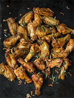

Ailes de poulet à la moutarde & crumble d’oignons frits
Ingrédients :
- • 3 lb d'ailes de poulet
- • 1/2 tasse de moutarde jaune
- • 2 c. à soupe de cassonade
- • 1 c. à thé de sauce sriracha
- • 2 c. à soupe d'huile végétale
- •1 gousse d'ail, hachée finement
Pour la sauce
- • 1/3 de tasse d'oignons frits
- • 1 c. à soupe de parmesan frais, râpé
- • 2 c. à soupe de basilic frais, haché finement
Pour le crumble
Étapes
- • Préchauffer le four à 400 °F.
- • Dans un bol, mélanger tous les ingrédients « pour la sauce », puis en réserver ¼ de tasse dans un petit bol. Ajouter les ailes de poulet dans le bol de sauce initial, puis bien les enrober. Déposer sur une plaque à cuisson recouverte de papier parchemin, puis enfourner pendant 20 minutes en les tournant à mi-cuisson.
- • Déposer les ailes dans un bol, ajouter la sauce restante, bien enrober, puis dans un petit bol, mélanger tous les ingrédients « pour le crumble », puis disposer sur les ailes de poulet. Déguster.